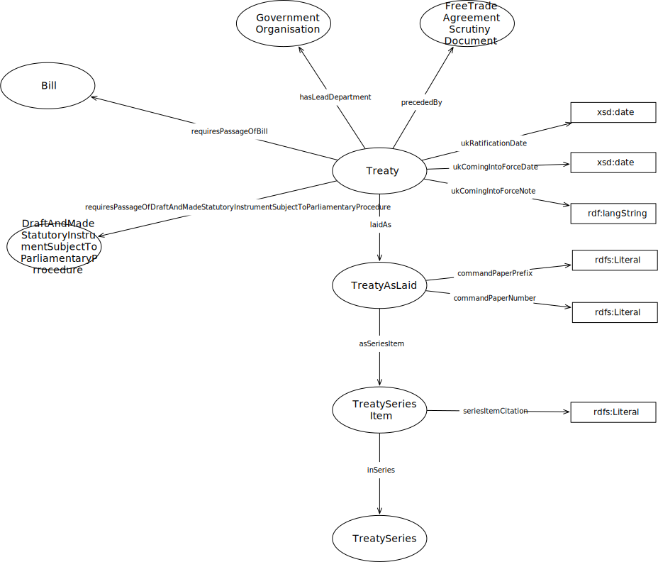

IRI: http://parliament.uk/ontologies/treaty/GovernmentOrganisation
IRI: http://parliament.uk/ontologies/treaty/PaperExpression
IRI: http://parliament.uk/ontologies/treaty/PaperWork
IRI: http://parliament.uk/ontologies/treaty/TreatyExpression
IRI: http://parliament.uk/ontologies/treaty/TreatyWork
IRI: http://parliament.uk/ontologies/treaty/expressionOf
IRI: http://parliament.uk/ontologies/treaty/hasLeadDepartment
IRI: http://parliament.uk/ontologies/treaty/ukComingIntoForceDate
IRI: http://parliament.uk/ontologies/treaty/ukComingIntoForceNote
IRI: http://parliament.uk/ontologies/treaty/ukRatificationDate
This HTML document was obtained by processing the OWL ontology source code through LODE, Live OWL Documentation Environment, developed by Silvio Peroni.